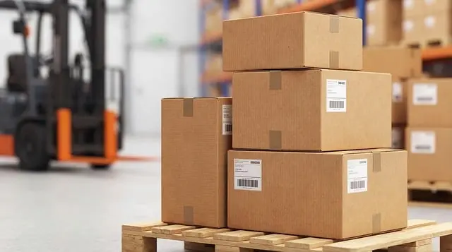

Mitä on aaltopahvi?
Aaltopahvi on kevyt mutta kestävä materiaali, jota käytetään erityisesti pakkausten valmistukseen. Se koostuu yhdestä tai useammasta aaltomaisesta paperikerroksesta sekä niiden molemmille puolille liimatuista sileistä paperikerroksista.
Miksi aaltopahvia käytetään?
- Kevyt kuljettaa
- Kestävä ja suojaava rakenne
- Edullinen valmistaa
- Helppo kierrättää
- Sopii painettuihin pakkauksiin
Mitä aaltopahvista valmistetaan?
Aaltopahvista valmistetaan monenlaisia tuotteita:
- Kuljetuslaatikot
- Postituspakkaukset
- Elintarvikepakkaukset
- Myyntitelineet ja esitteiden telineet
- Suojaavat pakkausmateriaalit
- Muutto- ja varastolaatikot

Aaltopahvin hyödyt
Aaltopahvi on ympäristöystävällinen vaihtoehto, koska se valmistetaan pääosin puukuiduista ja kierrätettävistä materiaaleista. Käytön jälkeen se voidaan kerätä ja käyttää uusien paperi- ja kartonkituotteiden raaka-aineena.